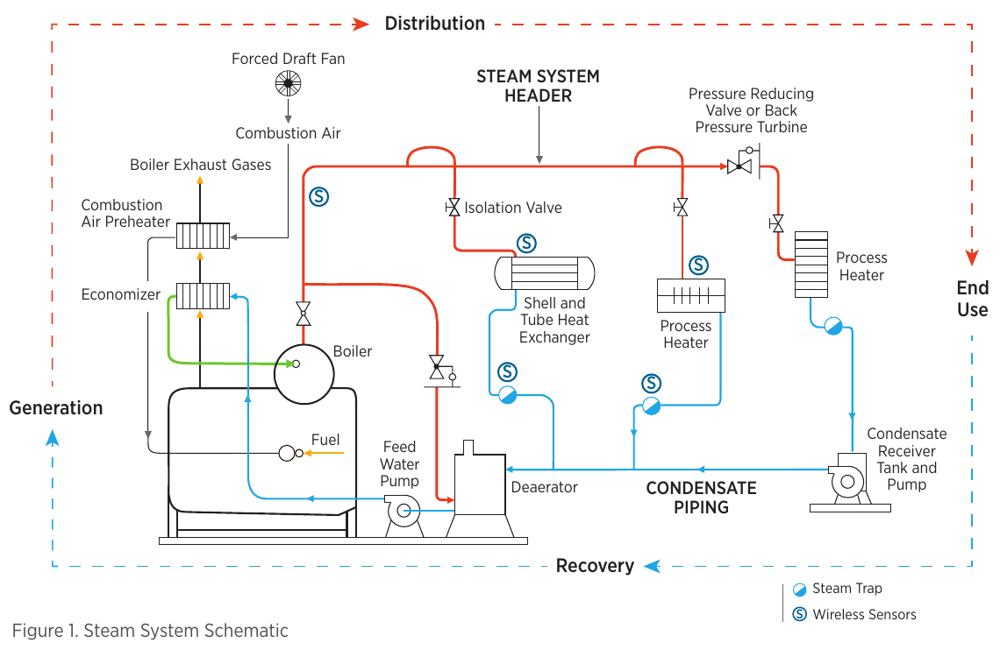
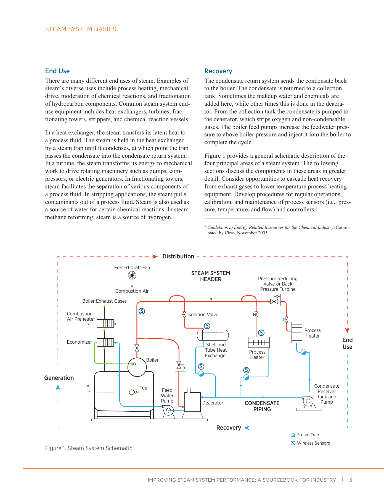
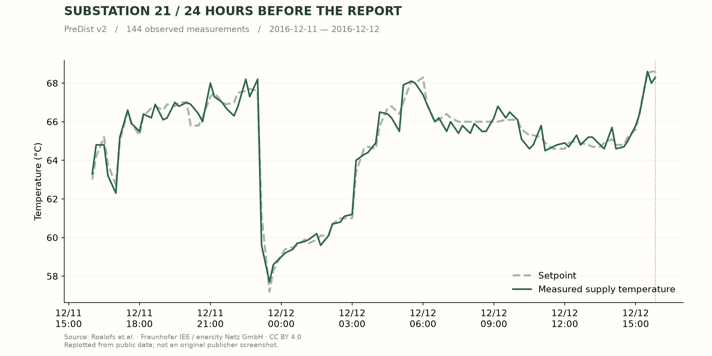
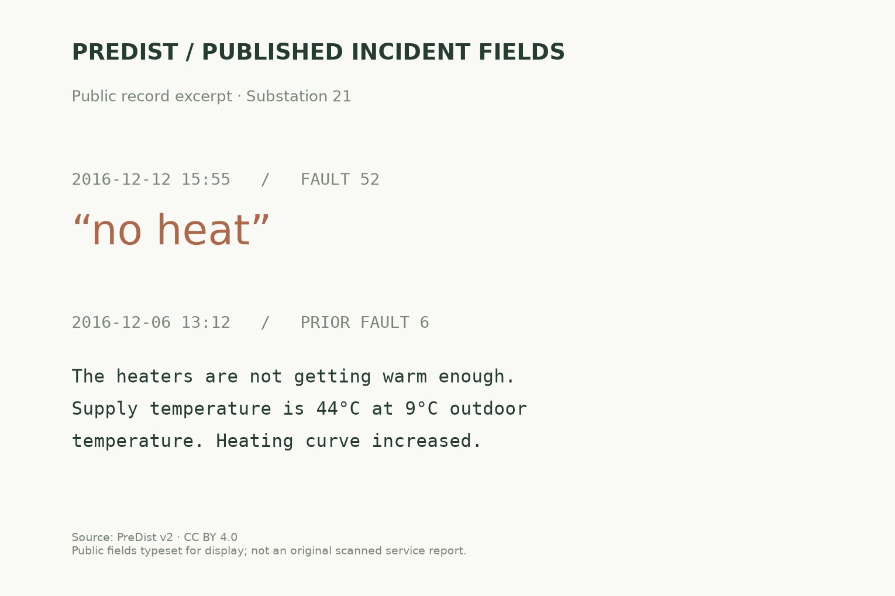

조사할 사건을 발견
운전 맥락과 추세 변화를 비교해
왜 살펴봐야 하는지 알려줍니다.
설비에 이상 징후가 생겼습니다.
어디에서 시작된 문제인지, 무엇부터 확인할지.
알람 하나만으로는 답하기 어렵습니다.
열을 사용하는 설비에서 이상 징후가 나타났다고 생각해 보세요.
설비 하나만 볼지, 공급과 회수 경로까지 확인할지 정하려면 계통도가 필요합니다.
아래 공개 증기 계통도에서 열교환기와 스팀트랩, 응축수 회수 경로를 따라가 보세요.

실제 공개 PDF에서 렌더링한 계통도입니다. 특정 발전소의 P&ID 또는 아래 PreDist 사건의 도면은 아닙니다.
같은 설비를 설명하는 정보가 서로 다른 곳에 있습니다.
판단하려면 이 근거들을 찾아 같은 시간과 설비 기준으로 맞춰야 합니다.
추세로 변화를 확인하고, 도면으로 경로를 찾고,
이력으로 이전 조치를 대조합니다. 이 탐색이 길어지면 판단도 늦어집니다.
끊임없이 변하는 센서·태그
설명용 규모 예시계측 파일 · 장애 신고 · 과거 조치 기록
실제 공개 자료 살펴보기 ↗정보 탐색이 식별 지연으로
관련 설비·페이지·기록을 한곳에
관측한 사실과 모르는 것을 구분
점검 위치와 이유를 함께 전달
운전 맥락과 추세 변화를 비교해
왜 살펴봐야 하는지 알려줍니다.
도면 위치·센서·정비 이력을
같은 설비 기준으로 찾습니다.
무엇을 확인했고 무엇이 빠졌는지
출처와 함께 정리합니다.
점검 위치와 이유를 검토하고
현장 확인으로 이어갑니다.
목표 사용자 흐름입니다. 현재 실행된 범위는 아래 공개 사건 POC에서 확인할 수 있습니다.
상시 감시는 Nano가, 근거 종합은 Ultra가.
사전 구축한 설비 인덱스에서 필요한 기록을 조회하고,
출처가 있는 점검안을 엔지니어에게 전달합니다.
원시 센서 전체를 LLM에 보내는 대신 특징과 사건을 선별하고, 필요한 근거만 조회하는 구조입니다.
페이지 안의 위치, 설비의 이름, 연결된 센서.
따로 있던 정보를 사전에 연결합니다.
사건이 생기면 근거가 있는 위치부터 시작합니다.

공개 사례에서 Ultra가 확인한 것은 이 간극입니다.
실내 온도와 유량을 다음 점검 항목으로 제안했습니다.

공개 데이터로 다시 그린 그래프 · 원본 운영 화면 캡처 아님

공개 필드의 이미지 발췌 · 원본 정비 보고서 스캔 아님
공개 사건 1건 · 계측 144개 · Ultra 도구 호출 3회
실내 온도·유량을 다음 확인 항목으로 제안
원인 진단 정확도와 식별 시간 단축
자동 도면 인덱싱 · 지속 감시 · 사내 보안 통제
식별 시간 → 감발·정지 기간 → 회수 가능한 발전량
8시간은 경제성 시나리오의 기준 가정, 30분은 목표입니다. 현재 POC는 시간 단축을 입증하지 않았습니다.공개 난방 사례에서 도면 위치와 실제 계측을 연결한 POC.